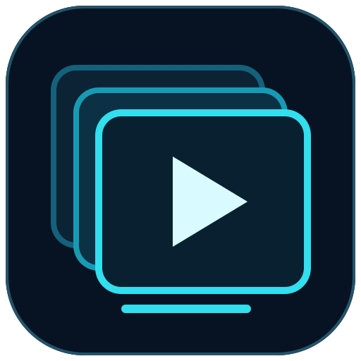

PVW다음 큐를 선택하세요EMPTY
다음 장면을 준비하세요미디어를 추가한 뒤 큐를 선택하세요
00:00.000PREVIEW · 음소거
PGM출력 대기STANDBY
공연 출력 대기준비된 큐에서 GO를 누르세요
00:00.000GPU 합성
CUE CONTROL선택된 큐 없음
공연 큐 0
| # | 큐 이름 | 레이어 | IN → OUT | 재생 | 상태 |
|---|
미디어를 불러와 “큐 추가”를 누르면 시작할 수 있습니다

| # | 큐 이름 | 레이어 | IN → OUT | 재생 | 상태 |
|---|